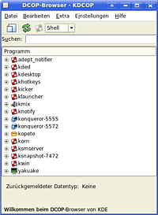

DCOP
Archivierte Anleitung
Dieser Artikel wurde archiviert, da er - oder Teile daraus - nur noch unter einer älteren Ubuntu-Version nutzbar ist. Diese Anleitung wird vom Wiki-Team weder auf Richtigkeit überprüft noch anderweitig gepflegt. Zusätzlich wurde der Artikel für weitere Änderungen gesperrt.
Hinweis:
DCOP wird von KDE 3.X benutzt, DCOP wird in KDE 4 nicht mehr verwendet. Dort wurde u.a. auf D-Bus umgestellt.
Zum Verständnis dieses Artikels sind folgende Seiten hilfreich:
Das Desktop Communications Protocol DCOP erlaubt es KDE-Programmen, untereinander zu kommunizieren. Man kann also aus Programm A heraus eine Funktion des Programms B aufrufen. Zum Einsatz kommt dies beispielsweise bei Videoplayern, die temporär den Bildschirmschoner deaktivieren.
Außerdem ist es möglich, mittels des DCOP-Clients dcop per Kommandozeile gezielt bestimmte Funktionen von laufenden KDE-Programmen auszuführen. Besonders nützlich ist dies bei Shellskripten. Eine mögliche Anwendung ist die Steuerung von Medienplayern mittels Multimediatasten der Tastatur. Bei ubuntuusers.de gibt es dafür ein Skript, mit dem diverse Medienplayer komfortabel per Tastendruck gesteuert werden können. Außerdem können dcop-Befehle auch für die Programmsteuerung über Fernbedienung (Lirc) verwendet werden.
Der textbasierte DCOP-Client¶
Die Verwendung des DCOP-Clients ist denkbar einfach. Man startet ein Terminal [1] und gibt ein
dcop ZU_STEUERNDES_PROGRAMM KOMMANDO
Dies setzt allerdings voraus, dass man das Kommando bereits kennt.
Um herauszufinden, welches Programm welche DCOP-Kommandos bietet, startet man einfach
dcop
ohne Parameter. Es werden nun alle laufenden Programme aufgelistet, die DCOP unterstützen. Laufen mehrere Instanzen des gleichen Programms, wird zur Unterscheidung noch eine Nummer (genauer gesagt: die PID  ) angefügt. Die Ausgabe von
) angefügt. Die Ausgabe von dcop könnte also beispielsweise so aussehen:
kwin kicker kded konqueror-5572 konqueror-5555 adept_notifier kdesktop ksmserver
Will man nun wissen, welche Kommandos von den einzelnen Programmen zur Verfügung gestellt werden, führt man dcop PROGRAMM aus, also beispielsweise
dcop kdesktop
Hinweis:
Man kann die Tabulator-Taste zur automatischen Vervollständigung verwenden.
Nun erhält man eine Liste der verfügbaren Objekte:
qt KBookmarkManager-/home/otto/.kde/share/apps/konqueror/bookmarks.xml KBookmarkNotifier KDesktopIface (default) KDirNotify-1 KDirNotify-2 KIO::Scheduler KScreensaverIface KShortURIFilterIface KURIIKWSFilterIface KURISearchFilterIface KonqUndoManager LocalDomainURIFilterIface MainApplication-Interface kdesktop ksycoca
Jedes dieser Objekte stellt bestimmte Funktionen zur Verfügung.
Weiter geht es beispielsweise mit
dcop kdesktop KDesktopIface
Hier werden nun die Funktionen des Objekts KDesktopIface angezeigt, darunter
void setWallpaper(int desk,QString wallpaper,int mode) void setWallpaper(QString wallpaper,int mode)
Das bedeutet: setWallpaper gibt es in zwei Versionen.
Die eine erwartet eine Ganzzahl desk, ein Textargument wallpaper und eine Ganzzahl mode. Bei der anderen Version kann man den ersten Parameter weglassen. Was diese Parameter bedeuten, lässt sich durch einfaches Ausprobieren herausfinden.
So führt das dcop-Kommando
dcop kdesktop KDesktopIface setWallpaper ~/tollesbild.png 1
dazu, dass auf allen Arbeitsflächen die Datei ~/tollesbild.png als zentriertes Hintergrundbild gesetzt wird, und mit
dcop kdesktop KDesktopIface setWallpaper 2 ~/nocheinbild.png 6
richtet man ~/nocheinbild.png als skaliertes Hintergrundbild der Arbeitsfläche 2 ein.
Ob das auch geklappt hat, testet man mit
dcop kdesktop KBackgroundIface currentWallpaper 1
und
dcop kdesktop KBackgroundIface currentWallpaper 2
Man erhält als Rückmeldung jeweils den Dateinamen des Hintergrundbildes.
KDCOP - Der grafische DCOP-Browser¶
Da es sehr mühsam ist, mittels Kommandozeile DCOP-Kommandos herauszufinden, bietet sich die Verwendung von KDCOP an. Es handelt sich hierbei um eine grafische Oberfläche, die eine übersichtliche Baumstruktur bietet. Gestartet wird KDCOP mit dem Befehl [2]
kdcop
 Ähnlich wie bei einem Dateimanager kann man in der Baumansicht die Programme und deren Objekte aufklappen, und die vorhandenen Funktionen mit Doppelklick ausführen. Bei Funktionen, die Argumente erwarten, werden diese in einem Fenster abgefragt.
Den Typ des Rückgabewerts kann man schon in der Baumansicht erkennen, da er vor dem eigentlichen Funktionsnamen angeführt wird. Der folgenden unvollständigen Liste kann man häufig auftretende Datentypen entnehmen:
| Von DCOP verwendete Datentypen | |
| Bezeichnung | Bedeutung |
| int | Ganzzahl |
| Q(C)String | Zeichenkette |
| Q(C)StringList | mehrere Zeichenketten |
| void | (keine Rückgabe) |
Wenn eine Funktion Rückgabewerte liefert, so werden diese im unteren Bereich des Fensters ausgegeben. Sie können mit "Bearbeiten -> Kopieren" in die Zwischenablage kopiert werden.
Beispiele¶
Um die mächtigen Möglichkeiten von DCOP zu demonstrieren, werden hier einige Beispiele angeführt:
Rechner herunterfahren¶
Häufig wird nach einer Möglichkeit gefragt, das System ohne Eingabe von sudo herunterzufahren. Neben der im Artikel "Herunterfahren" beschriebenen Methode geht es auch komfortabel mit dem dcop-Kommando
dcop --all-sessions --all-users ksmserver ksmserver logout 0 2 0
Hinweise zu den Parametern findet man bei Linux-User 02/05 ( siehe Links)
Lautstärke setzen mit kmix¶
Wenn kmix läuft, kann man mit diesem Befehl die Lautstärke des Hauptkanals auf 50% setzen:
dcop kmix Mixer0 setMasterVolume 50
Die einzelnen Soundkanäle sind mit bei 0 beginnenden Ganzzahlen durchnummeriert, und sind je nach Soundkarte unterschiedlich belegt. Mit dieser Eingabe kann man sich die Lautstärke der einzelnen Kanäle anzeigen lassen:
i=0; while [ "$(dcop kmix Mixer0 isAvailableDevice $i)" = "true" ]; do echo "Kanal $i: Lautstärke $(dcop kmix Mixer0 volume $i)%"; let i++; done
Der Befehl
dcop kmix Mixer0 setVolume 2 60
Kopete¶
Die Onlineverbindung von Kopete kann man mit
dcop kopete KopeteIface disconnectAll
trennen, und mit
dcop kopete KopeteIface connectAll
wiederherstellen. Dies ist nützlich, wenn man Spiele im Vollbildmodus startet. Ein einfaches Skript der Form
#!/bin/bash dcop kopete KopeteIface disconnectAll /pfad/und/name/des/spiels && dcop kopete KopeteIface connectAll
verhindert störende Popups, ohne dass man Kopete beenden bzw. neu starten muss.
Verlauf des "Ausführen"-Fensters löschen¶
Startet man Programme mit Alt + F2 , so wird der ausgeführte Befehl in den Verlaufsspeicher aufgenommen. Um diesen zu löschen, kann man entweder die Datei ~/.kde/share/config/kdesktoprc manuell bearbeiten, oder einfach
dcop kdesktop KDesktopIface clearCommandHistory
ausführen.
Steuerung über SSH¶
Will man Programme über eine SSH Verbindung steuern, so muss man in der SSH Session noch den Parameter --user angeben, damit dcop weiß, welche Session gemeint ist. Gibt man diesen Parameter nicht an, so erhält man die Fehlermeldung "ERROR: Couldn't attach to DCOP server!"
dcop --user <username> ZU_STEUERNDES_PROGRAMM KOMMANDO

- Erstellt mit Inyoka
-
 2004 – 2017 ubuntuusers.de • Einige Rechte vorbehalten
2004 – 2017 ubuntuusers.de • Einige Rechte vorbehalten
Lizenz • Kontakt • Datenschutz • Impressum • Serverstatus -
Serverhousing gespendet von